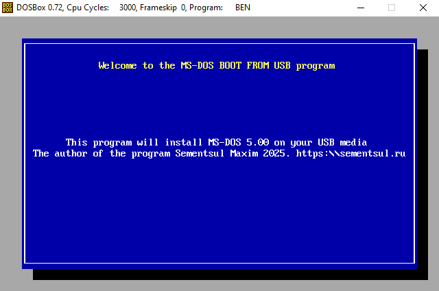
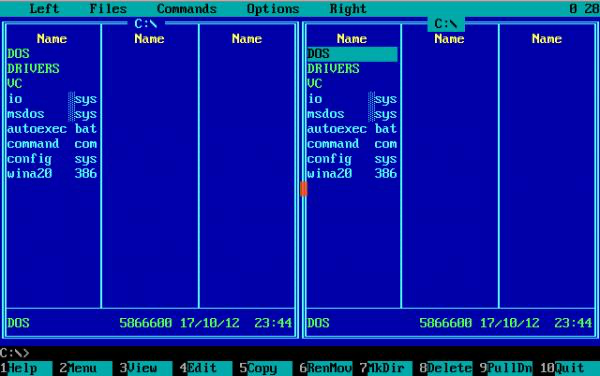

MBFU: Загрузка MS-DOS с USB - Скачать бесплатно
MBFU - это уникальная программа, позволяющая установить MS-DOS 5.0 и 6.22 на USB-флешку без использования дискеты. Теперь вы можете легко загрузить MS-DOS с USB-накопителя и наслаждаться любимыми играми и программами.
ВНИМАНИЕ: MBFU поддерживает только USB-флешки объемом не более 4GB.
Как загрузить MS-DOS с USB:
- Настройте загрузку с USB-флешки в настройках BIOS или UEFI.
- Для UEFI: Включите режим LEGACY MOD и отключите Secure Boot.


